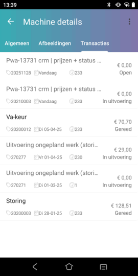
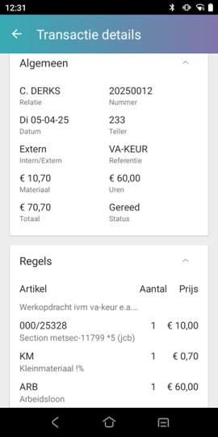

Er wordt rekening gehouden met de factuurregelcodes.
-
Als bijv. bij een artikel (dubbel)beperkt, een bedrag niet op de factuur wordt afgedrukt, verschijnt hij ook niet bij de transacties.
Om machine transacties te bekijken op de Powerall CRM app, doorloopt u de volgende stappen:
Ga naar het Dashboard.
Ga naar Machines CRM app
Selecteer de machine.
Ga naar tabblad Transacties of Transacties (iOs).
De machine transacties verschijnen.
Druk op een transactie om de details te bekijken.

Het scherm Transactie details verschijnt met aantallen en regeltotalen (geen stuksprijzen).
Opmerking: Bij een niet vrijgegeven werkorder is het (totaal)bedrag niet zichtbaar.
Na vrijgaven van de werkorder geldt het volgende:
De regels van een vrijgegeven werkorder worden geladen vanuit de bonnen bij een vrijgegeven externe werkorder.
De teksten van de werkopdracht, notitie en interne notitie wordt getoond.

De transactie / werkorder details worden weergegeven.
Opmerking: Alleen transacties van werkorders worden getoond. Als er bij een bon een servicenummer wordt ingegeven, is deze bon / transactie niet zichtbaar.
Er wordt rekening gehouden met de factuurregelcodes.
Als bijv. bij een artikel (dubbel)beperkt, een bedrag niet op de factuur wordt afgedrukt, verschijnt hij ook niet bij de transacties.
Als een werkorder nog niet is vrijgegeven, wordt het bedrag niet getoond.
Het is mogelijk dat het werkorder bedrag nog wijzigt.
Bij een transactie wordt eerst de referentie getoond daar onder staat:
het orderbedrag, als klantweergave uit staat.
de werkorder, datum en tellerstand (uren).
Vanaf versie 3.27 wordt bij de werkorder de 'status' weergegeven:
Open - bij geen artikelen en uren nieuw.
In Uitvoering - bij artikelen of uren incl. bedragen nieuw.
Gereed- de werkorder is vrijgegeven.
Hierdoor zijn de lopende werkorders met de prijzen beter inzichtelijk.
Copyright ©